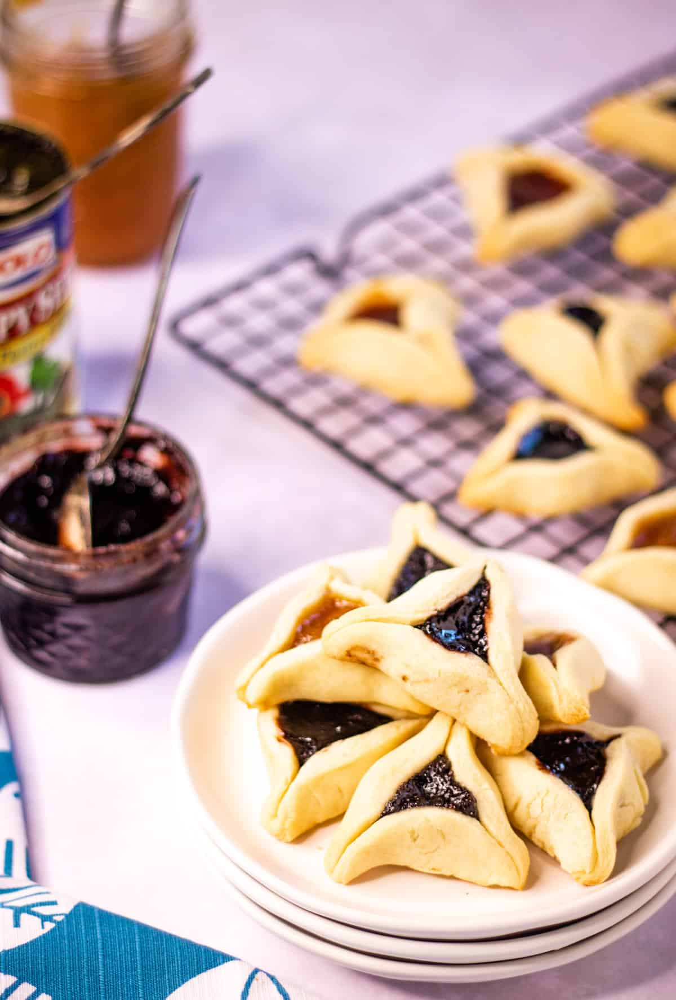

Hamentashen

Hamentashen are a triangle shaped cookie traditionally eaten during the Jewish holiday of Purim. They are tradtionally eaten with a poppy seed filling, but you can use any filling you like--such as fruit jams/preserves or even chocolate/nutella!
Ingredients
- Eggs
- Oil (with a neutral flavor)
- Sugar
- Salt
- Flour
- Baking powder
- Vanilla extract
- Filling (jam, preserves, poppy seed filling, nutella,d etc.
Steps
- Mix the eggs, oil, sugar, and vanilla in a mixing bowl until well combined.
- Add the flour, baking powder, and salt and mix until well combined in a stiff dough.
- Wrap the dough in plastic wrap and chill in the refrigerator for about an hour (or longer).
- Roll the dough out to 1/8-inch thickness and cut into circles.
- Dollop the filling onto the circles and fold up the sides to form a triangle around the filling.
- Bake until lightly golden brown.